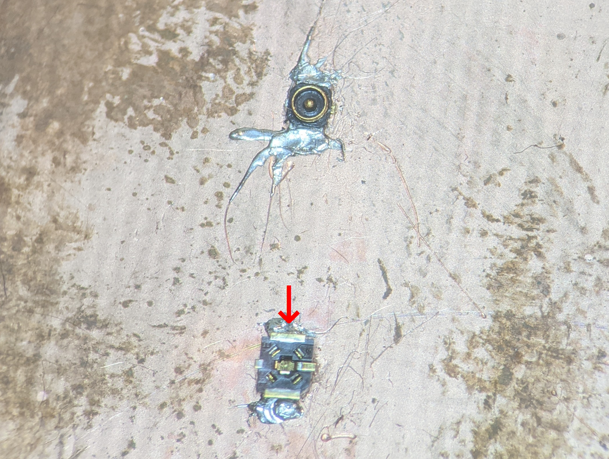
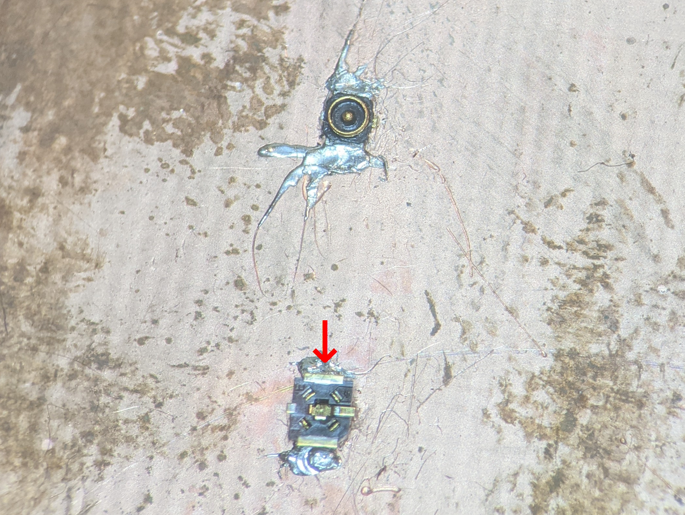

ONIX headstages communicate with host hardware using a 50-Ohmcoaxial cable. Because these
tethers only have two conductors, replacing them or making tethers of custom
lengths is quite simple. This page describes methods for creating light and
flexible coaxial headstage tethers.
Any suitable 50-Ohm coaxial cable can be used to make a tether. These
instructions use Axon Cable PCX40K10AK. The cable should be light, flexible
(silicone or thin FEP insulation), thin (less than 1 mm in diameter), and made
by a reputable supplier that can supply information on the cable’s electrical
characteristics. Most important are its DC Resistance and
RF Loss in the 1 GHz regime.
Note
Although the actual quantities matter, and smaller values are
better, the major hurdle is simply finding a supplier that will clearly
characterize them as this an indication of quality. We have used cables
from Axon Cable and cooner wire
with good results.
DC Resistance:
For DC signals, resistance is proportional to the inner
conductor’s resistivity and length and inversely proportional to its
cross-sectional area. The larger the DC resistance of the cable, the larger
the voltage drop across the cable, which requires increased compensation at
the voltage source. DC resistance is a strict function of the cable’s size
and thinner, longer cables will have a higher resistance than thicker,
shorter cables.
For radio-frequency signals transmitted in coaxial cables, frequency-dependent resistance
(“loss”) is determined by the skin effect rather than conductor cross
sectional area. Higher loss at a particular frequency will limit the length
of cable over which signals using that frequency band can be reliably sent
and received. Minimizing RF loss while maintaing uniform characteristic
impedance characteristics is and engineering challenge and requires
precision manufacturing.
2 mm segment of 1.5 mm OD, 0.5 mm ID silicone tubing for strain relief. The
easiest and cheapest way to get this is by striping the silicon jacket
from a 24 AWG flexible hookup wire.
Press X.FL sockets onto the X.FL connectors on the solder jig. We’ve found
that this is the most convenient method for holding these tiny pieces in
place during soldering and gluing.
Set the soldering iron to ~260 C. Using a fine soldering iron tip
(~0.2 mm or smaller), melt the plastic on the back side of the X.FL sockets
to cover the holes in the plastic. This is required to prevent epoxy
applied in later steps from getting into the mating surfaces of the
connectors.
Return the iron to soldering temperature (~370 C). Apply a dab of flux the
contacts on the X.FL socket. Tin the two outer ground contacts on the socket
along with the center pin connector.
Slide the 2 mm silicone tube over the end of the cable segment and push away
from the tip for later use.
Use the forceps to strip about 4-5 mm of the outer jacket from one end of
the coaxial cable segment. This can be done by pinching the tip of the cable
with the forceps and pulling it. This step may require some practice to get
right.
If you are not able to cleanly remove the outer insulation from
the coaxial cable on the first try, just cut the tip off and start
over. Clean insulaiton removal makes everything easier.
Split the outer conductors into two bundles that pushed to either side of
the cable. Use the forceps to strip the inner conductor in the same way as
before. Tin the two outer-conductor bundles and the inner conductor.
Important
Ensure that there are no stray wires after this process as
they can can cause shorts when the cable is soldered to the socket.
Solder the cable to the X.FL socket. Ensure that the outer connectors are
not making contact with the inner conductor, e.g. by being placed directly
over the center of the X.FL socket.
Mix and apply 5-minute epoxy to over the back of the X.FL socket. The epoxy
should completely cover the solder joint and extend ~1 mm onto the cable
itself.
Before the epoxy begins to cure, slide the 2 mm silicone tubing sement into
the epoxy, rotating a bit to ensure the inner portion and outer edge of the
silicone tube get a layer of epoxy.
Allow the epoxy to cure and then remove the completed assembly from the jig.
Warning
If expoxy has leaked between the X.FL contacts and bonded them
together, then the socket’s back was not properly melted in step 2, and
cable probably will not work.
Tip
Typically, the jig will have multiple X.FL connectors so that several tethers to be made in parallel.
5-minute epoxy (Bob Smith Industries brand works well)
Small wire cutters
Fine forceps for stripping the cable
Soldering iron with a fine tip and accurate temperature control
Fine solder (0.5 mm or thinner diameter)
A microscope is highly recommended for soldering and manipulation
of stripped cable segments.
Hot air gun or hot air rework station.
Cable Components
Coaxial cable segment
SMA plug to reverse-polarity SMA plug adapter
20 mm segment of 1.5 mm OD, 0.5 mm ID silicone tubing for strain relief. The
easiest and cheapest way to get this is by striping the silicon jacket
from a 24 AWG flexible hookup wire.
15 mm segment of 2.5 mm OD, 1.5 mm ID silicone tubing for strain relief. The
easiest and cheapest way to get this is by striping the silicon jacket
from a 20 AWG flexible hookup wire.
12 mm segment of 6.35 mm OD, 3:1 shrink ratio, adhesive lined heat-shrink
tubing for strain relief. We have found that NTE 47-23248-BK works well.
Place the SMA plug adapter on the work surface with the reverse polarity end
pointing up. It can be helpful to screw the adapter into a mating SMA
receptacle to hold it still during soldering. Tin the inner conductor and a
portion of the outer edge of SMA adapter.
Use the fine forceps to pinch and strip about 5mm of the outer jacket from
the from the end of the cable.
Note
If you are not able to cleanly remove the outer insulation from
the coaxial cable on the first try, just cut the tip off and start
over. Clean insulaiton removal makes everything easier.
Separate the outer conductor wires into a single bundle and strip the
insulation from the inner conductor.
Mix and apply 5-minute epoxy to the well provided by the coax adapter to
completely cover the solder joint. Put enough expoxy in the well such that
it rises well above the edge and his held in place due to surface tension.
Before the epoxy cures, move the 20 mm segment into the solder blob. Move up
and down to ensure that the bottom portion of the silicon tube is covered in
epoxy. Repeat this process for the 15 mm segment.
Set the the hot air gung to ~250 C and use it to activate the heat shrink
tubing starting at the base of the connector and working up toward the top.
The seal is complete when the adhesive lining begins to come out of the top
of the heatshrink tubing.

{kind=link}
 



{kind=link}
{kind=link}
{kind=link}
{kind=link}
{kind=link}
{kind=link}
{kind=link}
{kind=link}
{kind=link}
{kind=link}
{kind=link}
{kind=link}
{kind=link}
{kind=link}
{kind=link}
{kind=link}
{kind=link}